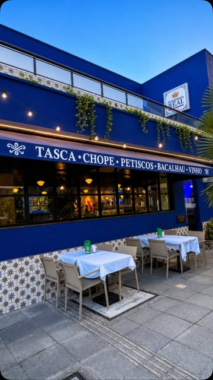
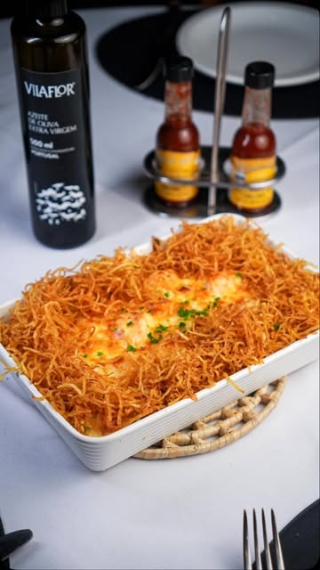
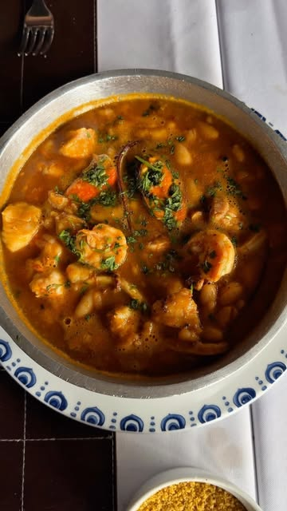
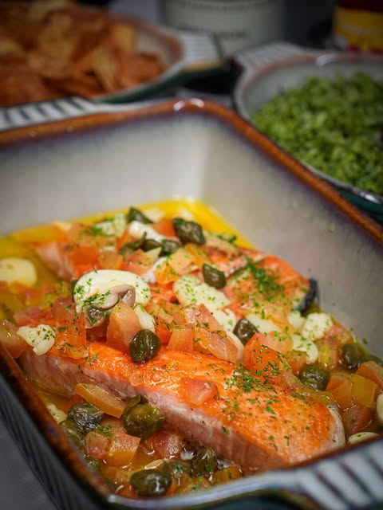

Gastrobar português no Meireles
Bacalhau, petiscos e vinho verde, à moda de Portugal.
Pratos tradicionais portugueses, ambiente descontraído e drinks autorais, do almoço de fim de semana ao happy hour.

Os clássicos da casa
Receitas tradicionais portuguesas que não saem do cardápio.
Bacalhau à lagareiro
O clássico português, assado no azeite.
Polvo à madeirense
Polvo preparado à moda da Ilha da Madeira.
Arroz de pato
Um dos pratos mais tradicionais de Portugal.
Bolinhos de bacalhau
Mini bolinhos de bacalhau com batata, para petiscar.
Pão português
Rústico, de casca crocante, com manteiga de ervas. Bom para molhar nos caldos.
Pastel de nata
O doce português mais famoso, para fechar.



Fotos: @tasquinharealoficial
Happy hour
Chopp, drinks e petiscos em horário especial durante a semana. Confira os dias e horários com a casa.
- Espetos de camarão, sirigado, frango e coração
- Vinhos portugueses, como o vinho verde
- Azedinho, gengibrada e gin tônica
- Pastelzinhos e batata Ramiro
Quando abrimos
- Almoço
- Terça a domingo
- Jantar
- Terça a sábado
Confirme o horário do dia pelo WhatsApp ou no Instagram.